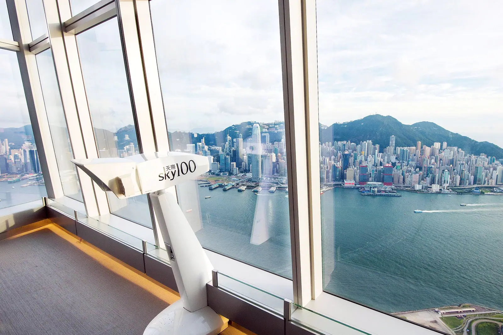
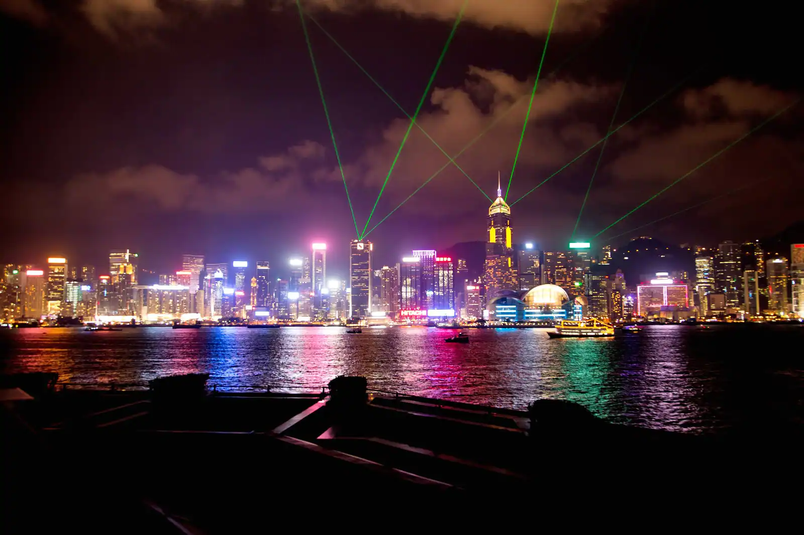

Beaches of Hong Kong
You may not plan a beach vacation to Hong Kong, but if you are here on a hot, humid, sunny day,and need an escape from the concrete jungle, you'll be glad to hear that spectacular beaches are nearby. You don't have to go far from the attractions of the city center to find beautiful soft-sand beaches,but if you venture out a ways, you can have some all to yourself. On Hong Kong Island, the beaches are in close proximity to each other, but each has its own unique character.
Top 3 Beaches
- Shek O Beach
- Big Wave Bay
- Repulse Bay Beach
Panoramic Views in Hong Kong
Hong Kong has one of the most photographed skylines in the world, and there are plenty of spots where you can take in the incredible views. This list of panoramic views in Hong Kong range from swanky rooftop bars to observation decks that are free of charge, giving you a bit of variety in both budget and perspective of the city.
Night life in Hong Kong
The Hong Kong nightlife scene is fun, friendly and incredibly diverse. The city is at its most spectacular when the sun goes down when skyscrapers begin to illuminate the harbor, while pubs and nightclubs draw in partygoers with lively music.